Portfolio case studyAnalytics · BI · Machine learning
Workforce analyticsEmployee AttritionAnalytics System
EAAS brings descriptive HR analysis, a Power BI dashboard and a Streamlit prototype into one portfolio project. It turns a 1,470-record HR sample into segment-level findings and an interactive decision-support concept.
Presentation message. I built an end-to-end HR analytics prototype that turns employee data into segment-level findings and an interactive decision-support concept. The descriptive dashboards are the strongest current deliverable. The individual prediction workflow needs correction before it is presented as a reliable live scorer.
| Capability | Evidence in the project |
|---|---|
| Data analytics | Cleaning notebook, exploratory analysis, feature preparation and derived segment rates. |
| Business intelligence | Four Power BI pages: executive overview, attrition, salary and satisfaction, and risk insights. |
| Application build | Streamlit landing page with Dashboard, Prediction, Insights and About modules. |
| Machine learning | Logistic Regression and Random Forest comparison, saved artifacts and a prediction form. |
Data and analysis workflow
The project identifies its source as an IBM HR employee attrition dataset. The raw CSV has 1,470 rows and 35 columns.
Data
1,470 rows and 35 raw fields.
Analyze
Cleaning and EDA leave 31 retained fields.
Model
Logistic Regression and Random Forest on an 80/20 holdout.
Present
Power BI dashboard and Streamlit prototype.
| Stage | What is present in the archive |
|---|---|
| Data | Raw and cleaned CSV files; 1,470 employee observations. |
| Cleaning | Four constant or identifier columns removed (EmployeeCount, Over18, StandardHours, EmployeeNumber), leaving 31 of 35 fields. No missing values and no duplicate rows recorded. |
| Exploration | Notebook charts for department, overtime, monthly income, satisfaction and encoded correlations. |
| Modeling | One 80/20 holdout split (random_state=42); label encoding for text fields; StandardScaler; Logistic Regression and Random Forest. |
| Reporting | Power BI .pbix file, four page screenshots and additional static EDA charts. |
| Application | Streamlit pages and assets, saved model, scaler and feature-column list. |
Dataset summary. 237 employees have Attrition = Yes and 1,233 have Attrition = No. The model notebook’s test split contains 294 records.
Scope limit. The source represents a sample workforce, not an identified employer’s current staff. Rates describe these records only and should not be generalized to another organization without validation.
What the sample shows
Rates are calculated from the archived raw CSV. Group counts are included so you can judge the size of each segment.
Attrition rate by overtime
Employees with overtime left at about 2.9 times the rate of those without, a gap of 20.1 percentage points.
Attrition rate by monthly income quartile
Quartiles use MonthlyIncome. The raw dataset does not define a currency unit.
| Segment | Leavers / group | Rate |
|---|---|---|
| Sales department | 92 / 446 | 20.6% |
| Research and Development | 133 / 961 | 13.8% |
| Human Resources | 12 / 63 | 19.0% |
| Job satisfaction score 1 vs 4 | 66 / 289 vs 52 / 459 | 22.8% vs 11.3% |
| Sales Representative role | 33 / 83 | 39.8% |
How to read this. Overtime, lower income and low satisfaction are associated with higher observed attrition in this sample. They are not proven causes. Sales Representatives are a smaller subgroup of 83 employees, so always state the denominator with the rate.
The charts behind the findings.
Power BI pages, notebook charts and Streamlit screens from the project archive. Images are compressed for fast loading; select any image to open it at full size.
Left the company 16.12% · Stayed 83.88%
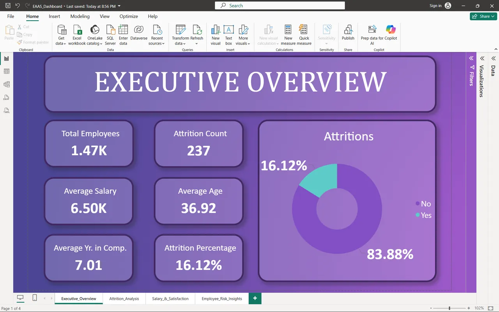
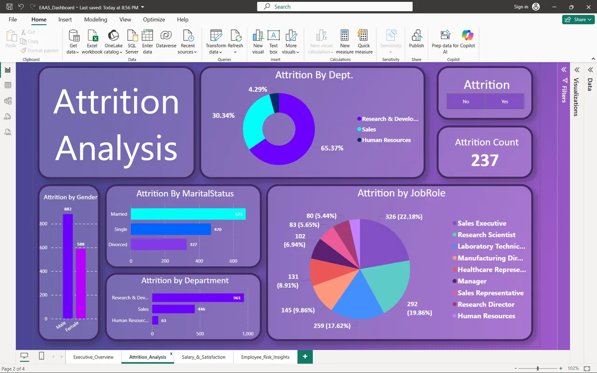
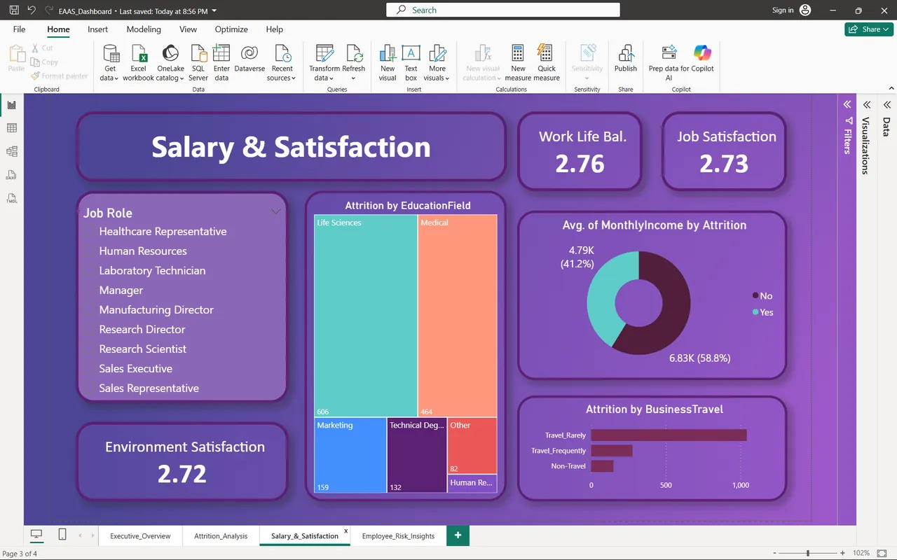
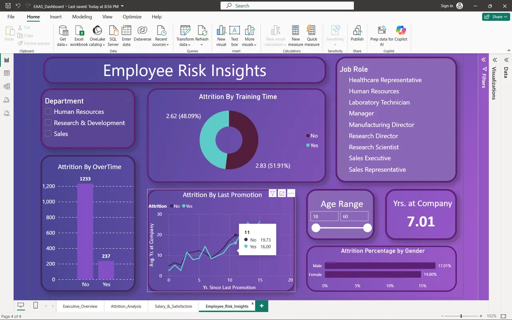
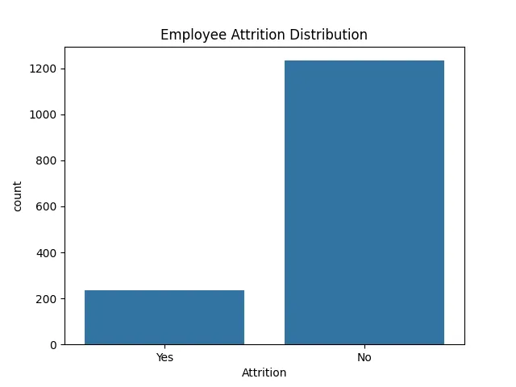
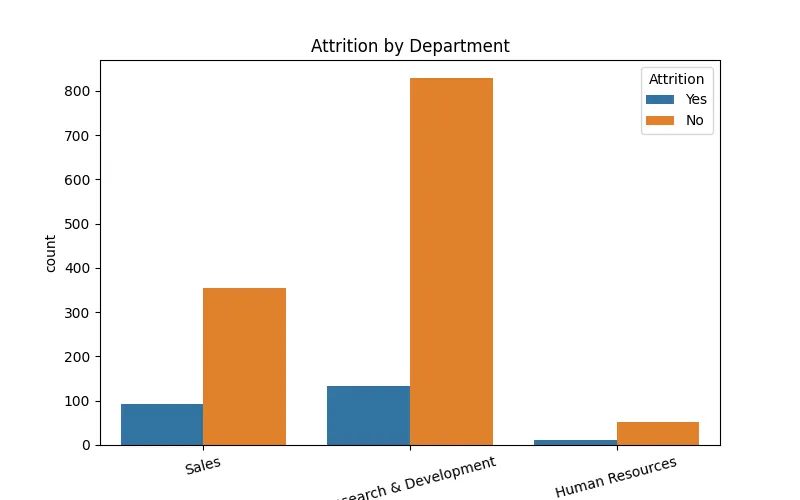
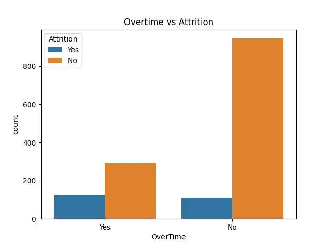
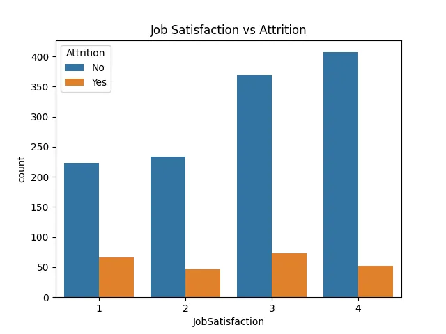
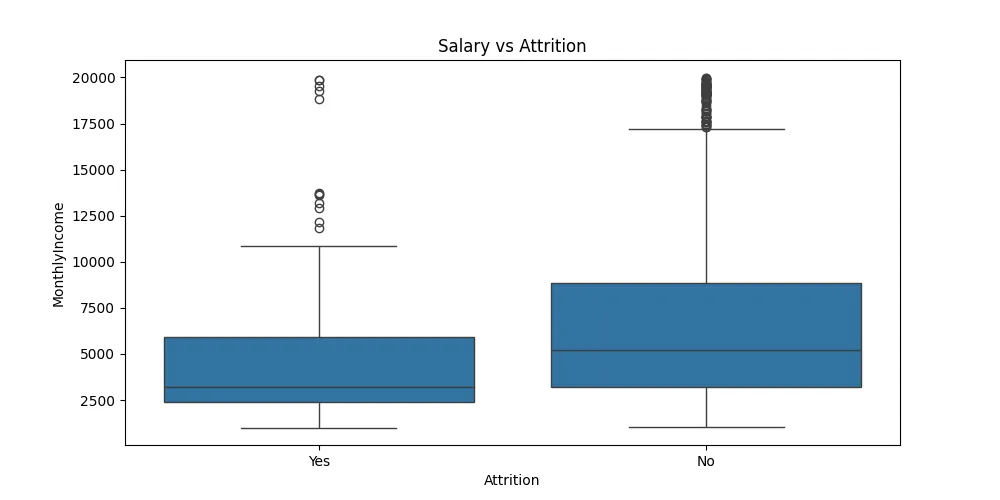
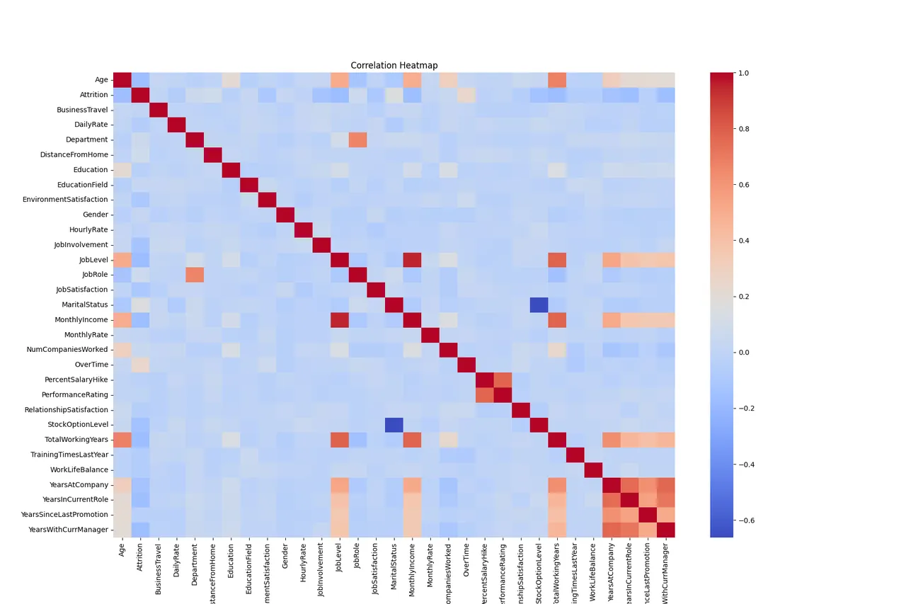
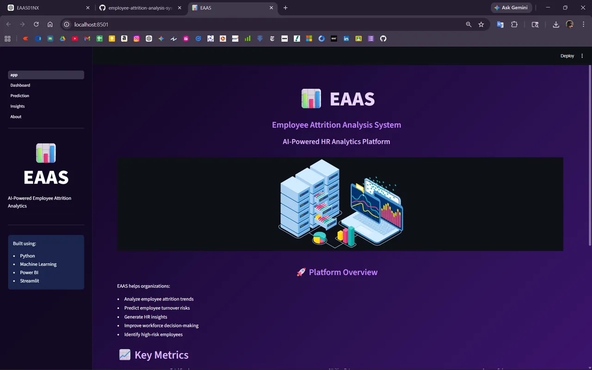
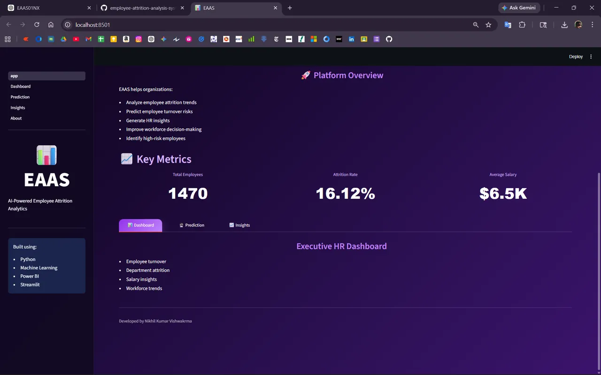
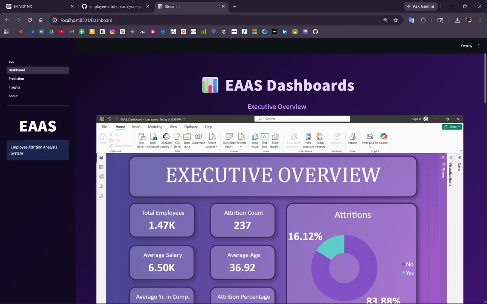
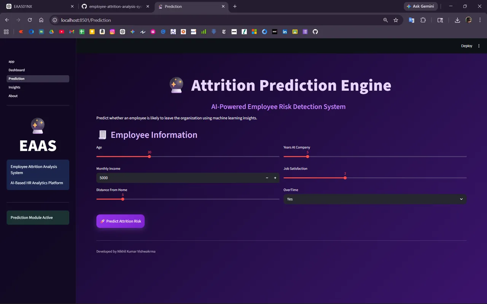
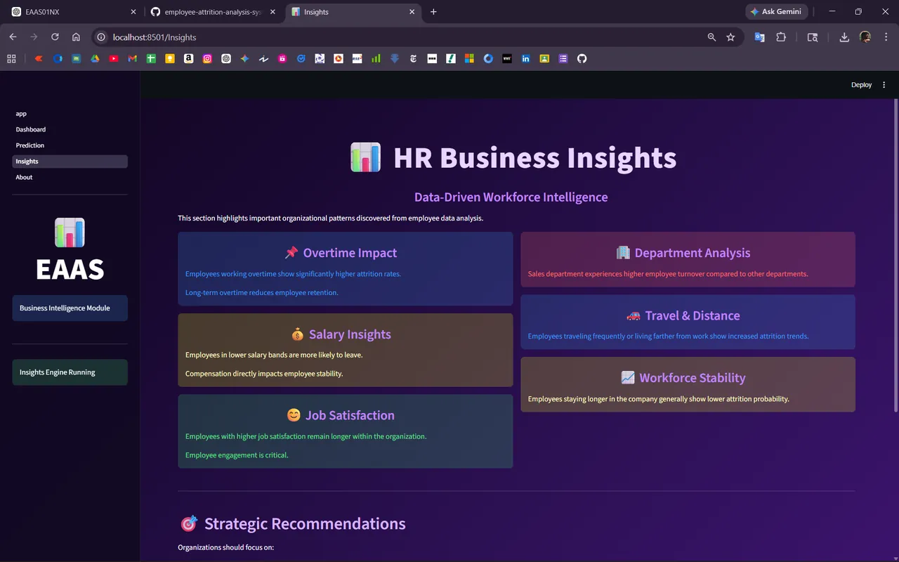
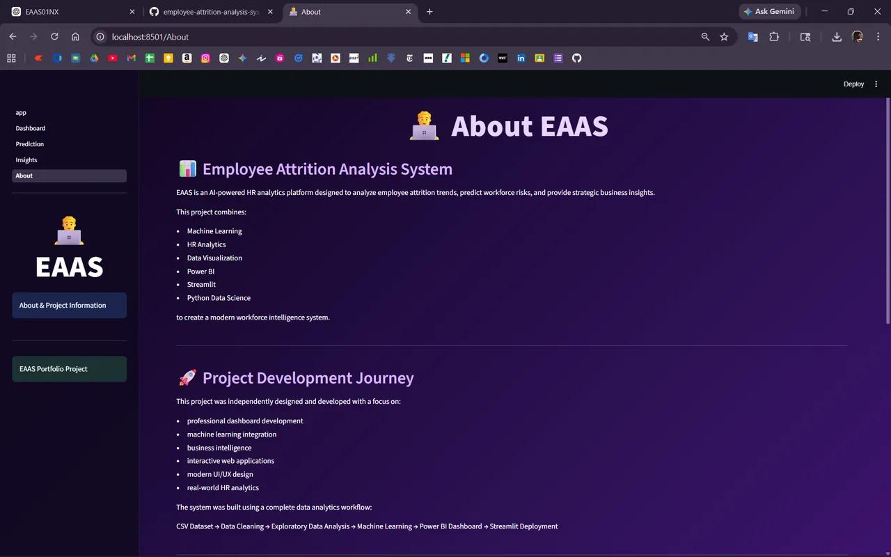
Power BI dashboard
The repository includes a Power BI file and screenshots of four report pages. The Executive Overview shows headline counts, attrition percentage, average age, average monthly income (labelled Average Salary) and average tenure. The other pages add breakdowns by attrition segment and workforce attributes.
| Page | Presentation focus |
|---|---|
| Executive Overview | 1,470 employees, 237 exits and 16.12% attrition. |
| Attrition Analysis | Overtime and department patterns. |
| Salary and Satisfaction | Income and satisfaction comparisons. |
| Employee Risk Insights | Employee attributes and segment-level views. |
Units. The dashboard formats average monthly income as 6.50K. The raw CSV does not define a currency unit, so this site refers to income units rather than asserting a currency. The earlier Streamlit landing page typed "$6.5K"; the revised copy calculates this value from the data.
Streamlit application
The Streamlit project contains a landing page and four modules: Dashboard, Prediction, Insights and About.
The form collects six fields and is intended to show a risk classification and probability.
- Executive Overview. State the 16.12% sample baseline.
- Attrition Analysis. Compare overtime rates and group counts.
- Salary and Satisfaction. Show the segments and why denominators matter.
- Streamlit prototype. Walk through the form; do not submit a score.
- Model results. Close with recall and the scoring fixes needed.
Prototype only. The revised copy runs and returns the attrition-class probability, but it is still a prototype: each score comes from one holdout model on sample data, so do not use a score to make decisions about an individual employee.
What the notebook actually reports
The model notebook uses one 80/20 train-test split (random_state=42). Accuracy alone does not tell the full story for an imbalanced target, so the per-class numbers matter here.
| Model | Notebook evidence | What it means |
|---|---|---|
| Logistic Regression | 89.46% accuracy; 70% precision and 35.9% recall for attrition; F1 = 0.47. | Identifies 14 of 39 leavers in the 294-record test split and misses 25. |
| Random Forest (saved artifact) | 87.41% accuracy; saved to Models/attrition_model.pkl. | The notebook does not include a full precision and recall report for this saved model. |
Test split of 294 records.
Attrition is the minority class at 16.12%. A model can score well on overall accuracy while missing many employees who leave. Here, 25 of the 39 leavers in the test split were missed.
Static code review found a scoring mismatch
This review is based on source inspection. The app was not executed.
| Finding | Effect |
|---|---|
| The form supplies 6 fields, but the trained feature list has 30 predictors; the predictor fills the other 24 with zero. | The model receives a feature vector that does not represent the fields used in training. |
| Training label-encodes text fields, but prediction does not reuse those encoders or the full preprocessing. | Inputs can be encoded inconsistently with training. |
| The utility returns both class probabilities, but the page passes that two-value array to float() as one score. | Submitting is likely to error or misreport probability, depending on runtime versions. |
Accuracy claim correction. The 89.5% figure matches the Logistic Regression result (89.46%), not the saved Random Forest artifact. Before repeating an accuracy figure publicly, name the model, holdout method, class-specific recall and saved artifact together.
Status after correction (V02). The revised Streamlit copy returns the attrition-class probability, fills the 24 unasked fields with typical training values instead of zeros, computes the dashboard KPIs from the cleaned CSV, loads all assets from project-relative paths, and reproduces the saved Random Forest accuracy of 87.41% on the same split. Scores are still single-holdout estimates from an uncalibrated model.
A short improvement plan
The project has a strong portfolio story across analytics, BI, machine learning and a web interface. These changes would make the demo more reproducible and the prediction claims more credible.
| Priority | Action | Reason |
|---|---|---|
| P0 · Prediction | Save one preprocessing-and-model pipeline. Reuse it in the app, supply the full feature schema, and return only the attrition-class probability using the model’s class ordering. | Aligns training and inference; removes the two-value probability bug. |
| P0 · Evaluation | Correct the 89.5% claim to identify Logistic Regression. Report Random Forest metrics separately; evaluate recall, precision, F1, PR-AUC, ROC-AUC, threshold choice and cross-validation. | Makes performance transparent for an imbalanced target. |
| P1 · Portability | Replace absolute paths and working-directory-dependent model paths with paths derived from the project files. Correct README instructions for Streamlit_App/app.py. | Lets the project run after cloning or moving it. |
| P1 · Reproducibility | Pin package versions and document data and model rebuild steps. Repair README screenshot links to match the archive paths. | Makes setup repeatable and documentation consistent. |
| P2 · Responsible use | Add calibration and subgroup error review, a data-minimization note and human-review guidance. Keep scores out of automated employment decisions. | Employment-related predictions need careful validation and oversight. |
Present: three notebooks, raw and cleaned CSVs, three model artifacts, a Power BI file, Streamlit pages and assets, and report screenshots.
In the supplied archive, the SQL, Scripts, Deployment and Test directories are not present in the supplied archive. No automated test suite or deployment configuration is included.
The scorer and file paths are repaired in the revised copy. Next, run one known profile end to end in Streamlit and record the class probability, model version and explanation together.
Ready to explain
Suggested opening. EAAS is my end-to-end employee attrition analytics portfolio project. I used a 1,470-record HR dataset to explore where attrition is concentrated, built a four-page Power BI report for business users, and developed a Streamlit prototype that connects the analysis to a prediction workflow. The strongest descriptive signal in this sample is the difference between employees with and without overtime.
| Time | What to show | What to say |
|---|---|---|
| 0:00–0:45 | Purpose and data | This is a 1,470-row sample, not a live employer data feed. |
| 0:45–1:45 | Executive Overview | Establish 237 exits and a 16.12% sample attrition rate. |
| 1:45–2:45 | Attrition Analysis | Show overtime rates and mention association, counts and limits. |
| 2:45–3:45 | Salary and Satisfaction | Show more slices and why denominators matter. |
| 3:45–4:30 | Streamlit screen | Show the form as a prototype; avoid submitting until scoring is repaired. |
| 4:30–5:00 | Model and next step | Explain both model results and close with validation needs. |
The test set is imbalanced, and Logistic Regression recalled only 35.9% of leavers in the notebook output.
No. The chart shows association in this sample, not causality.
Not in the current form. The scoring path and validation must be fixed first, and any future use should support human review.
How these numbers were checked
Project repository. github.com/nikhilvishwakrma2002/employee-attrition-analysis-system-python-powerbi-streamlit (public main branch, accessed 13 November 2026).
Evidence reviewed. Readme.md; raw and cleaned CSVs; the three notebooks (data cleaning, EDA and model training); Models/; the Power BI file; Streamlit_App/; Reports/Screenshots/.
Method notes. Descriptive rates were recomputed from the supplied raw CSV. Model metrics reflect the saved notebook outputs. Source inspection is not runtime validation of the Streamlit app.
Let’s talk about analytics and HR data.
Nikhil Kumar Vishwakrma · Data Analyst | Power BI Developer · Bengaluru, Karnataka, India